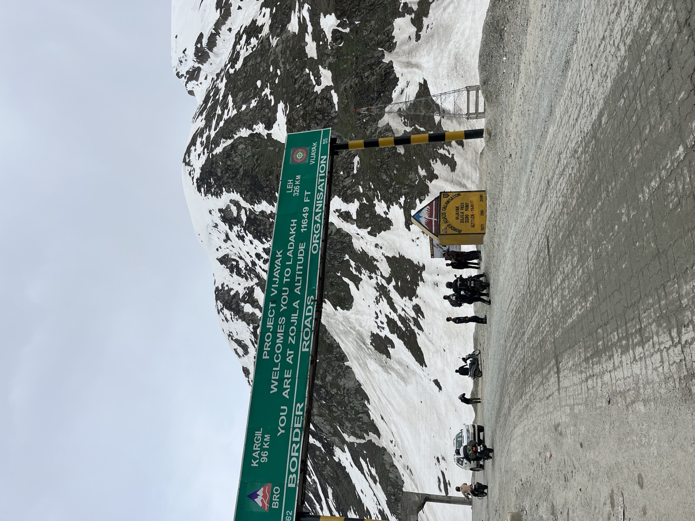
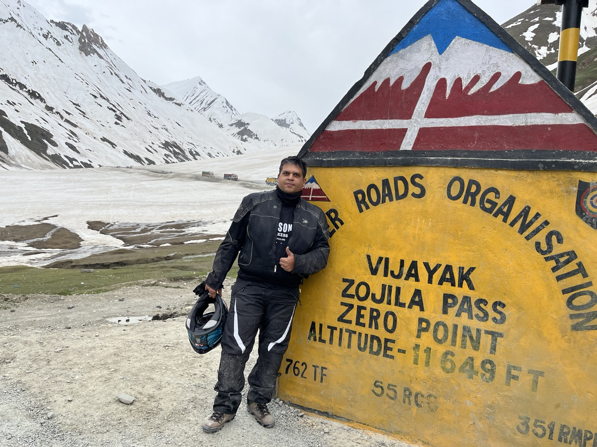
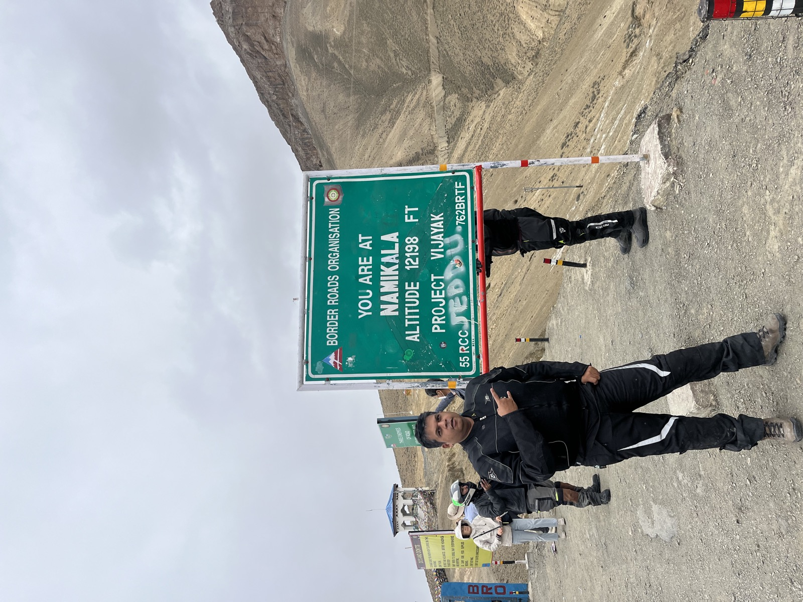
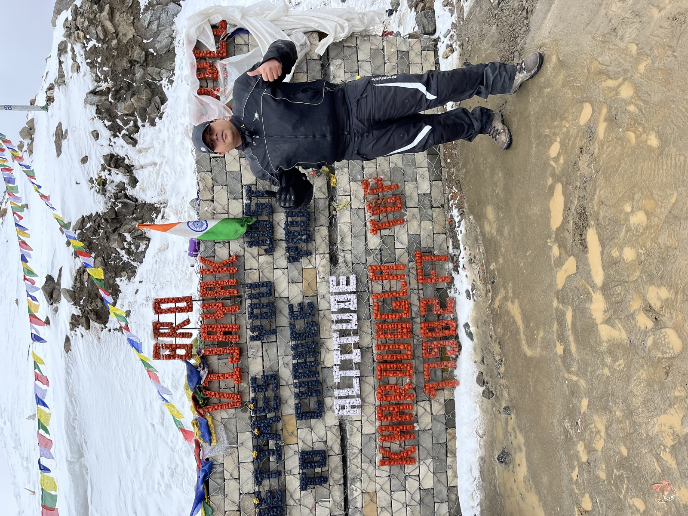
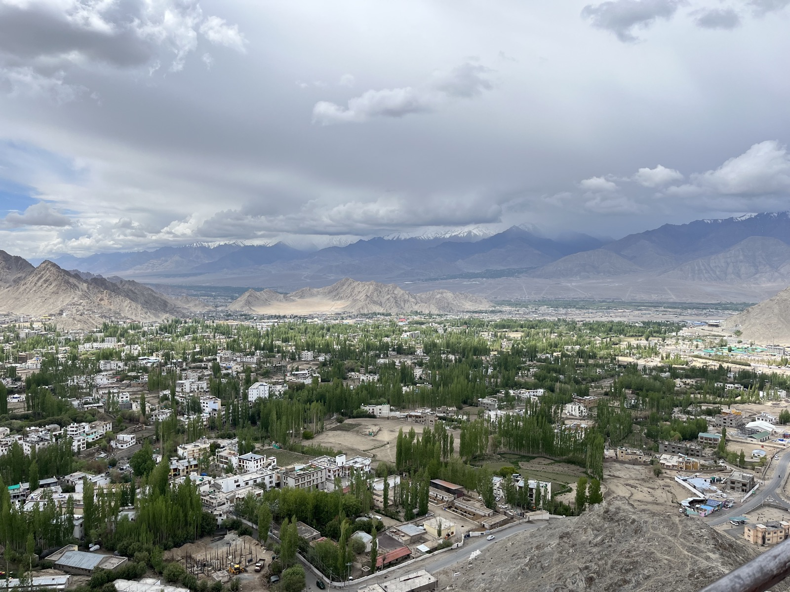
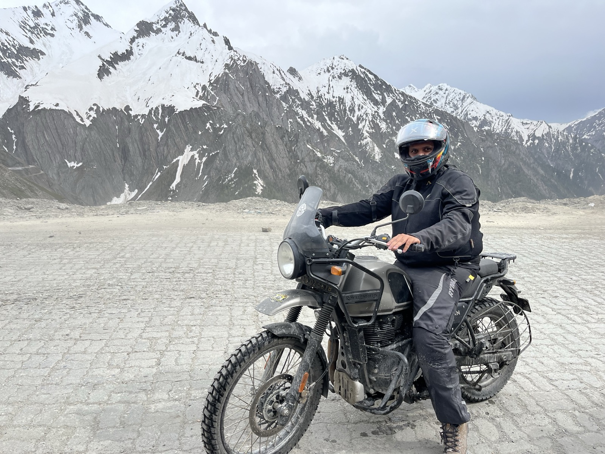
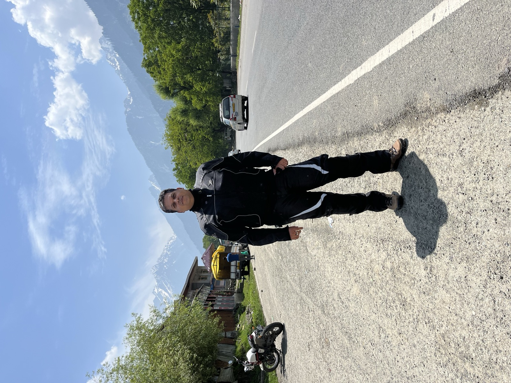
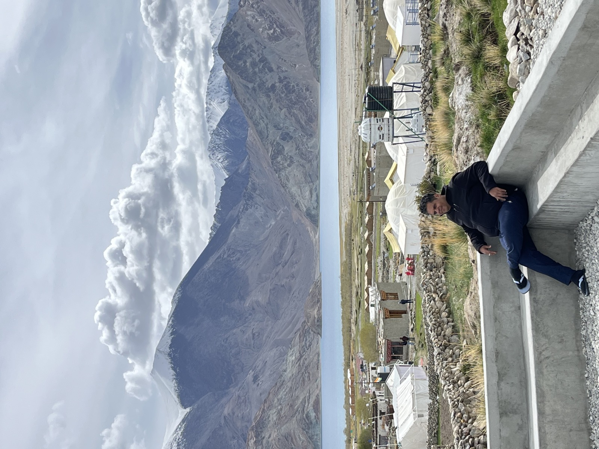

01
Ladakh
Where the road meets the sky
A motorcycle journey through some of the highest motorable roads in the world. From the treacherous Zojila Pass to the serene Namika La, every mile was an adventure. The barren landscapes of Ladakh hold a raw, untouched beauty that no photograph can fully capture — but these come close.

Riding through the mighty Himalayas

Zojila Pass — 11,649 ft

Namika La — 12,198 ft

Top of the world — Khardung La
River confluence in the Ladakh valley

Leh — the heart of Ladakh

Open roads, clear skies

The road to Ladakh

Where clouds meet mountains